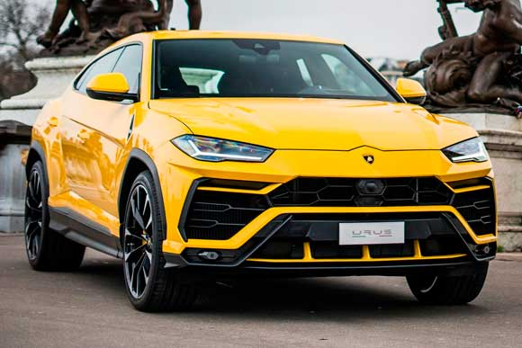

Lamborghini

Lamborghini Urus
O Lamborghini Urus tem um motor 4.0 V8 Biturbo de 650 cv de potência máxima. A transmissão as ou 70%é automática de 8 marchas e a tração integral sob demanda, podendo transferir até 87% da força para as rodas traseir para as rodas da frente. A aceleração de 0 a 100 km/h acontece em 3,6 segundos e a velocidade máxima é de 305 km/h.